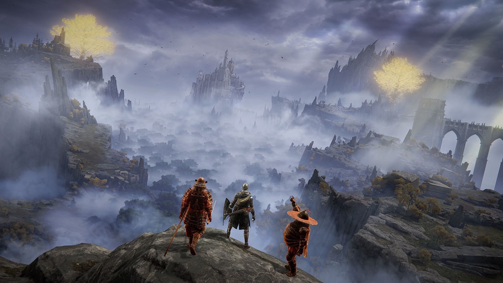
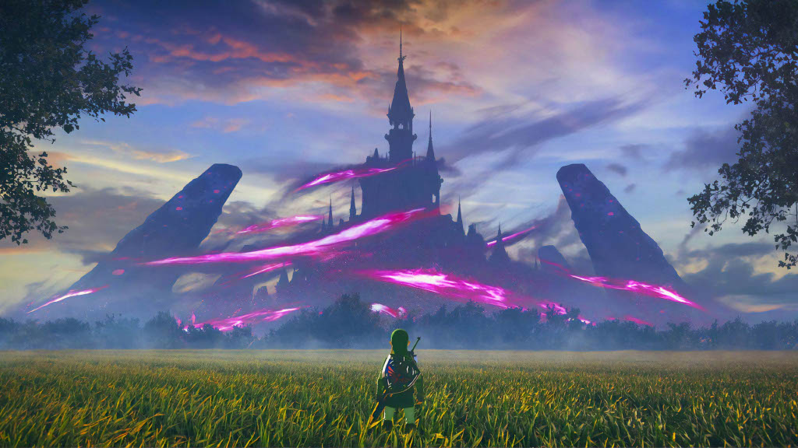

My Top Recommendations
Some people might be wondering what games they could introduce to their kids. My first game recommendation is Elden Ring. This is more of a mature game so always be cautious before showing younger kids. Elden Ring is an open world RPG where you set out on a journey across a medieval like world. Your mission is to become the Elden Lord and defeat the final boss. On the way there you will encounter optional and required bosses you fight however you want. The fun in this game is there are so many different weapons to choose from. What this means is how you play is up to you. You could use a giant sword or a small dagger. Wanting a challenge? You could duel wield shields if you wanted to. It is up to you!
The second game I want to recommend is The Legend of Zelda: Breath of the Wild. This game is more family friendly so if you are a parent with younger kids, I highly recommend this one. This is also an open world RPG but, in this game, you play as a character named Link. Link's mission is to save Princess Zelda who has been keeping the enemy named Ganon at bay for one hundred years. He will need to travel the lands of Hyrule to level up and become strong enough to save his princess. This game is filled with fun fights, puzzles, and a delightful story. You are bound to have fun no matter your age!
